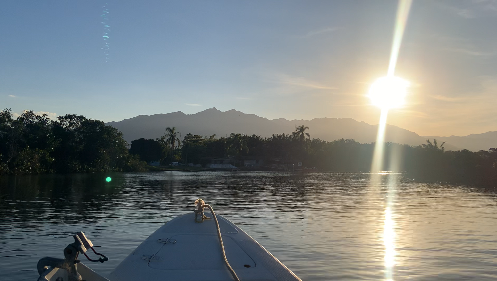

À beira do Rio Palmital
Marina
Estrutura para quem chega com embarcação ou quer deixar o barco próximo do ponto de partida da pescaria.
Acesso direto ao rio

Seu barco perto da água
Seu ponto de partida no rio.
A marina dá apoio a quem chega com embarcação e quer manter o barco próximo do acesso ao Rio Palmital. Consulte disponibilidade, período e condições diretamente com a pousada.
Quero deixar meu barco com vocês → clique aqui
Rampa
Mais praticidade para embarque e desembarque.
Acesso ao rio
Saída próxima para começar a pescaria.
Vagas sob consulta
Consulte período e condições diretamente com a pousada.